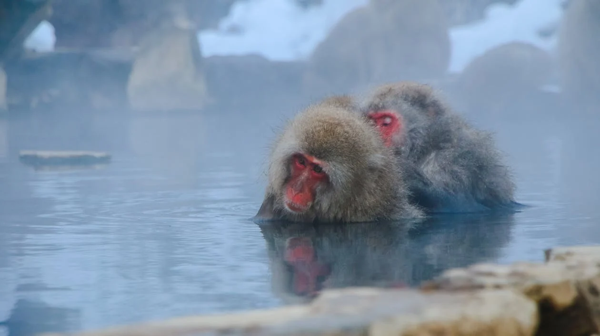
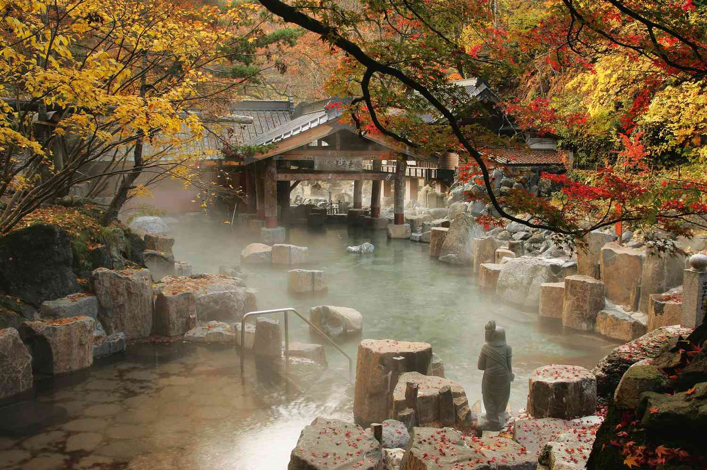

Nagano's Secret Springs

The Historical Significance of Nagano's Hidden Hot Springs
Nagano, famous for its natural beauty and winter sports, is also home to secluded hot springs that are less known to the typical traveler. These hidden springs, many of which have been cherished by locals for centuries, offer a unique glimpse into the healing traditions of Japan. The mineral-rich waters are believed to possess restorative properties, providing both physical and spiritual renewal. Far from the more commercialized onsen resorts, these secret springs invite visitors to experience a more tranquil and authentic side of Nagano.

A Tranquil Escape to Nagano’s Secret Springs
Visiting these hidden hot springs is a peaceful journey into nature. Tucked away in the mountains or forests, these onsen are often surrounded by breathtaking landscapes, allowing visitors to soak while taking in the serene views. Many of these springs are found in remote areas, accessible only by hiking or winding roads, ensuring a quiet, reflective atmosphere. Whether nestled by a river or shaded by ancient trees, these secret springs offer an intimate connection with nature, far from the bustling tourist spots.

Beyond the therapeutic benefits, Nagano's hidden springs provide a serene environment perfect for relaxation and contemplation. The surrounding natural beauty, combined with the soothing warmth of the spring water, creates an unforgettable experience. Whether you’re a nature lover or simply looking to unwind in a quiet setting, these secret hot springs offer a hidden gem experience, making them essential for those seeking to explore the quieter, more peaceful side of Japan’s onsen culture.